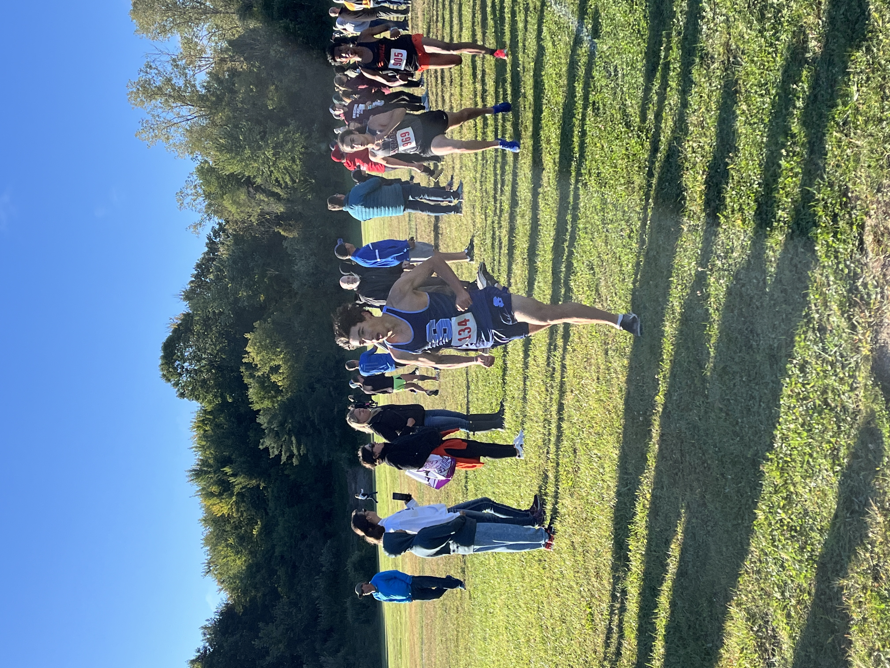
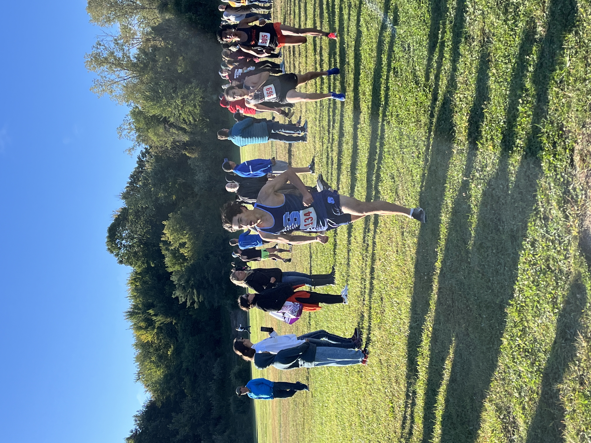
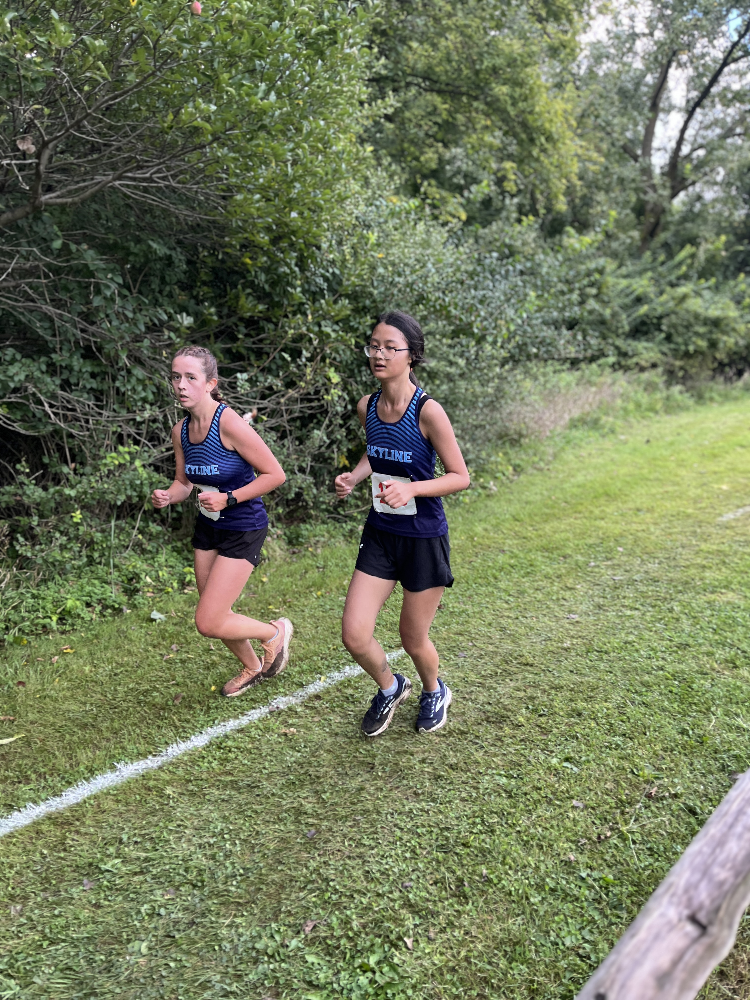
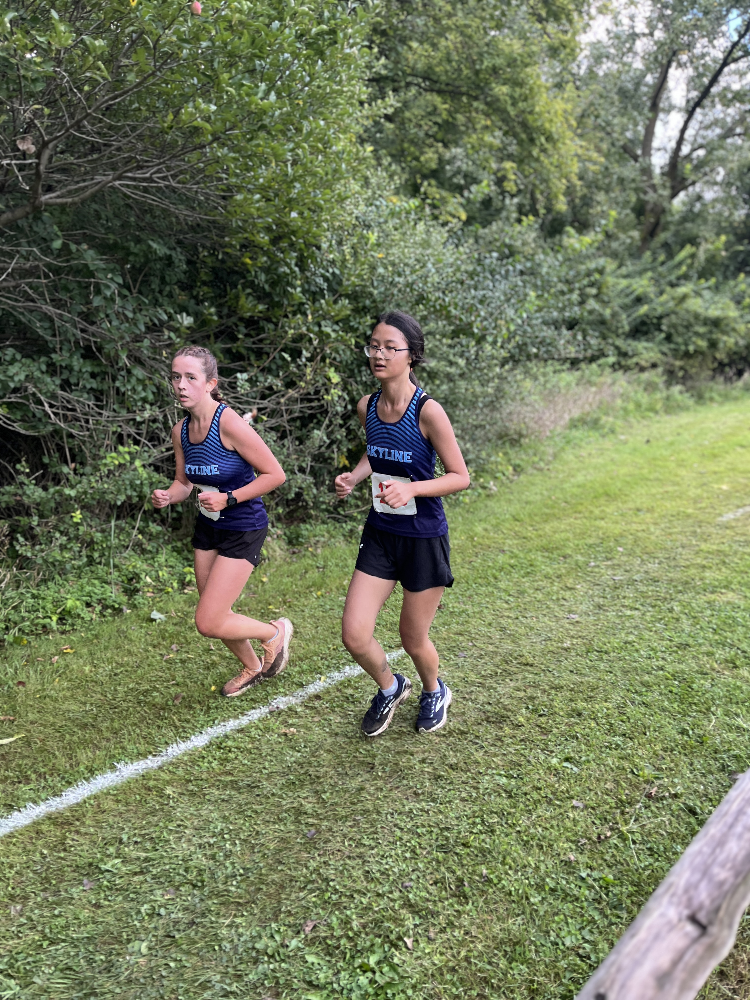

Bret Clements Bath Invitational Womens 5000 Meters J.V.
Sat Sep 7 2024
Race Summary
Ann Arbor Skyline’s JV girls placed 6th out of 14 teams. Leading the team was Katie Yuan, who finished 12th with a season record (SR) of 22:39.10. Grace Hopkins followed closely in 16th with a time of 23:01.54 (SR), while Julianna Heung secured a personal record (PR) with her 24:06.37 finish. Other notable Skyline performances included Ruthie Scott (24:20.80 PR), Calla Sopoci (24:30.36 PR), and Alexandra Wren (24:33.26 SR). Several Skyline runners achieved personal records, contributing to a solid team performance.
Team Results
| Place | Team | Score |
|---|---|---|
| 1 | Chuck Block Timing | 15 |
| 2 | Northville | 76 |
| 3 | DeWitt | 110 |
| 4 | White Lake Lakeland | 114 |
| 5 | Ann Arbor Fr Gabriel Richard | 131 |
| 6 | Okemos | 133 |
| 7 | Ann Arbor Skyline | 133 |
| 8 | East Grand Rapids | 257 |
| 9 | Orchard Lake St. Mary's | 271 |
| 10 | Marian (Bloomfield Hills) | 328 |
| 11 | East Lansing | 339 |
| 12 | Linden | 367 |
| 13 | Cedar Springs | 384 |
| 14 | Lansing Everett | 411 |
Individual Results
Katie Yuan
Place
12
Time
22:39.10
Grade
10
Grace Hopkins
Place
16
Time
23:01.54
Grade
11
Julianna Heung
Place
38
Time
24:06.37
Grade
12
Ruthie Scott
Place
42
Time
24:20.80
Grade
10
Calla Sopoci
Place
47
Time
24:30.36
Grade
9
Alexandra Wren
Place
48
Time
24:33.26
Grade
12
Violet Olley
Place
52
Time
24:37.52
Grade
9
Ann Kececi
Place
55
Time
24:45.94
Grade
12
Elsa Wenzlaff
Place
58
Time
24:54.68
Grade
11
Emily Mei
Place
68
Time
25:09.91
Grade
11
Vera Naines
Place
77
Time
25:29.12
Grade
12
Nina Beals
Place
81
Time
25:37.36
Grade
11
LeAnne Fayyad
Place
136
Time
27:55.49
Grade
10
Arabella Kessler
Place
153
Time
28:51.93
Grade
11
Gallery


 



 
